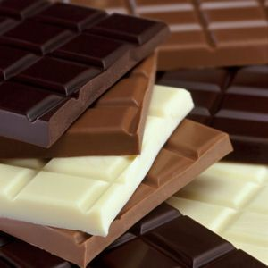
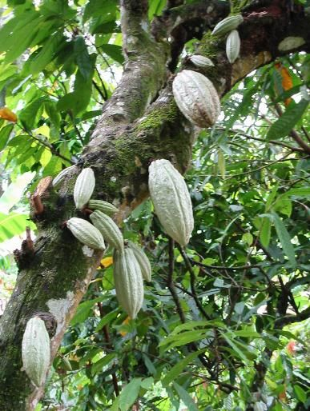

Generalități
Ciocolata este un preparat din semințe de cacao prăjite și măcinate, în stare lichidă sau solidă, folosit ca ingredient aromatizant în alte alimente. Primele semne de utilizare sunt asociate cu siturile Olmec (care reprezintă teritoriul postcolonial al Mexicului), care sugerează consumul de băuturi cu ciocolată, datând din secolele 19 î.e.n. Majoritatea oamenilor Mezoamericani au făcut băuturi cu ciocolată, inclusiv cei din civilizația Mayașă și Aztecă.

Semințele arborelui de cacao au un gust amar amar și trebuie fermentate pentru a dezvolta aroma. După fermentare, boabele sunt uscate, curățate și prăjite. Învelișul este îndepărtat pentru a produce miez de cacao, care este apoi măcinat până ce devine o masă de cacao, mai exact ciocolată veritabită în formă brută. Odată ce masa de cacao este lichefiată prin încălzire, aceasta se numește lichior de ciocolată. Lichiorul poate fi, de asemenea, răcit și prelucrat în cele două componente ale sale: cacao solidă și unt de cacao. Ciocolata artizanală, numită și ciocolată amară, conține cacao solidă și unt de cacao în proporții diferite, fără zahăr adăugat. O mare parte din ciocolata consumată astăzi este ciocolată dulce, o combinație de cacao solidă, unt de cacao sau uleiuri vegetale adăugate și zahăr. Ciocolata cu lapte este ciocolata dulce care conține suplimentar lapte praf sau lapte condensat. Ciocolata albă conține unt de cacao, zahăr și lapte, dar fără cacao solidă.

Ciocolata este unul dintre cele mai populare alimente și arome din lume și există multe produse care conțin ciocolată, în special deserturile, cum sunt prăjiturile, budinca, mousse-ul, brioșe cu ciocolată și biscuiți cu ciocolată. Multe bomboane sunt umplute cu sau acoperite cu ciocolată îndulcită. Batoanele de ciocolată, fie din ciocolată solidă, fie din alte ingrediente acoperite cu ciocolată, sunt consumate ca gustări. Cadourile de ciocolată modelate în diferite forme (cum ar fi ouă, inimi, monede) sunt tradiționale anumitor sărbători occidentale, inclusiv Crăciunul, Paștele, Ziua Îndrăgostiților și Hanukkah. Ciocolata este folosită și în băuturile reci și calde, cum ar fi laptele cu ciocolată și ciocolata caldă, precum și în unele băuturi alcoolice, cum ar ficreme de cacao.
Deși cacao este originară din America, țările din Africa de Vest, în special Côte d’Ivoire și Ghana, sunt producătorii de cacao fruntași în secolul 21, reprezentând aproximativ 60% din oferta mondială de cacao.
Nutriție
O porție de 100 de grame de ciocolată cu lapte furnizează 540 de calorii. Reprezintă 59% carbohidrați (52% ca zahăr și 3% ca fibră dietetică), 30% grăsimi și 8% proteine. Aproximativ 65% din grăsimea din ciocolata cu lapte este saturată, în principal acid palmitic și acid stearic, în timp ce grăsimea nesaturată predominantă este acidul oleic.
100 de grame de ciocolată cu lapte este o sursă excelentă (peste 19% din valoarea zilnică, VZ) de riboflavină, vitamina B12 și minerale dietetice, mangan, fosfor și zinc. Ciocolata este o sursă bună (10–19% VZ) de calciu, magneziu și fier.
Efecte asupra sănătății
Ciocolata poate fi un factor pentru arsuri la stomac la unele persoane, deoarece unul dintre componentele sale, teobromina, poate afecta mușchiul sfincterului esofagian într-un mod care permite acizilor stomacali să intre în esofag. Intoxicația cu teobromină este o reacție de supradozaj la alcaloidul amar, care se întâmplă mai frecvent la animalele domestice decât la oameni. Cu toate acestea, aportul zilnic de 50–100 g de cacao (0,8–1,5 g teobromină) de către oameni a fost asociat cu transpirația, tremurul și durerea de cap severă. Ciocolata conține alcaloizi precum teobromină și fenetilamină, care au efecte fiziologice la om, dar prezența teobrominei o face toxică pentru unele animale, precum câinii și pisicile.
Ciocolata și cacao conțin oxalat în cantități moderate până la mari, ceea ce poate crește riscul cuiva de a face pietre la rinichi. În timpul cultivării și producției, ciocolata poate absorbi plumbul metalelor grele din mediu, dar cantitățile totale consumate în mod obișnuit sunt mai mici decât limita zilnică tolerabilă pentru consumul de plumb, potrivit unui raport al Organizației Mondiale a Sănătății din 2010. Cu toate acestea, rapoartele din 2014 indică faptul că „ciocolata ar putea fi o sursă semnificativă” de ingestie de plumb pentru copii dacă consumul este mare, iar „un cub de 10 g de ciocolată neagră poate conține până la 20% din limita zilnică de plumb oral”.
Câteva studii au documentat reacții alergice la ciocolată în rândul copiilor. Alte cercetări au arătat că ciocolata neagră poate agrava acneea la bărbații care sunt predispuși la ea. Cercetările au arătat că consumul de ciocolată neagră nu afectează în mod substanțial tensiunea arterială. Ciocolata și cacao sunt în curs de cercetare preliminară pentru a determina dacă consumul afectează riscul anumitor boli cardiovasculare sau abilități cognitive.
O porție de o lingură (5 grame) de pudră uscată de cacao neindulcită are 12,1 mg de cofeină și o porție de 25 g de ciocolată neagră are 22,4 mg de cafeină. Deși o singură ceașcă de cafea de 200 ml poate conține 80–175 mg, studiile au arătat că apar efecte psihoactive în doze de cafeină de 9 mg și o doză de 12,5 mg are efecte asupra performanței cognitive.